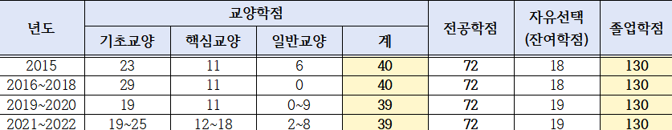

대상
8개 학기(조기 졸업 신청자는 6개 학기 또는 7개 학기, 편입학생은 편입 이후 잔여 재학 학기)이상 등록을 마친 4학년 재학생
졸업요건
- 총 130학점 취득 (선취업후진학 재직자과정 대상자는 총 120학점 취득)
- 재학 연한은 8년 이내 (편입생은 잔여 수업연한의 2배)
- 전 학년 총 평점평균 1.75 이상 (조기 졸업 신청자는 4.2 이상)
- 졸업작품발표
- 교양, 전공 등 이수구분별 졸업소요학점 취득
- 학과(부·전공)별 교양지정 과목 및 전공필수 과목 이수
- 핵심교양 영역별 각 3학점 이상 이수 (‘6.필수이수교과목‘ 참고)
- 다(복수,연계,융합,부)전공자 이수 예정자는 학점 이수
(해당자는 학과사무실에서 별도 졸업사정 요청)
졸업소요학점
